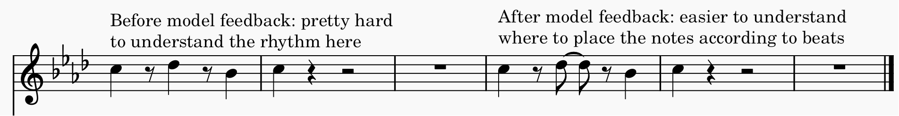
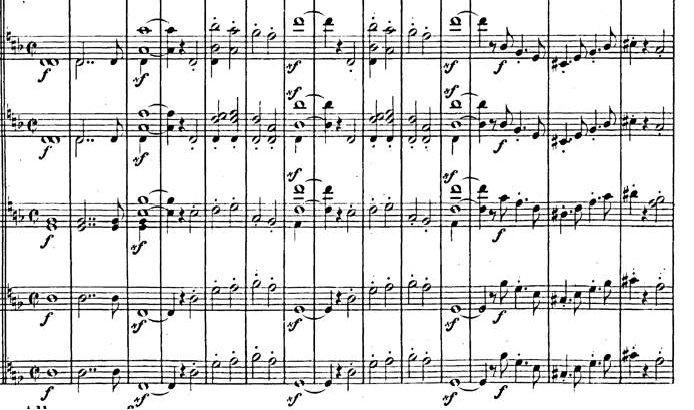

Other people play a huge role in motivating us to pursue something, while others might simply provide inspiration or great ideas
in a certain task. These people are considered to be our models. Models are people that we look up to and learn from, either
explicitly or implicitly (Lecture 5).
There are several criteria that define a good model:
Competence: the model is an expert at the topic. This is why we would seek feedback from other
people who have composed before because they can give valuable tips on how to write certain passages, or how to express your ideas in music. For instance,
I have learnt from my band teacher the importance of writing rhythms in a way that makes it easier to interpret for music students. I learned that it is easier
to write syncopated rhythms by emphasizing where the beats are.

Power & Prestige: the model is well known and influential. Composers will often be influenced by the big names in classical music: Beethoven, Bach,
Chopin, Debussy, etc. because they were known to have created very influential pieces of music that we still know and play to this day. My style has certainly been
influenced by these great composers to the point where I model and use their melodies as a starting point for an idea. The following example
is the introduction for a piece that is heavily inspired by Mendelssohn's "Reformation" Symphony.

Source: IMSLP
Relevant:the model is someone who is similar to the learner. Schunk (2001) claims that we tend to replicate behaviour from people who are more similar to us because
then it is more likely that we obtain the same outcome as them. Composers will probably be inspired by people whose pieces they enjoy so they might write
more like them. Furthermore, composers would probably have models that come from similar cultures. Because I was born in Canada, and my ancestry
is European, I am very much more likely to adopt Western composition techniques and methods. I use common Western tonal scales for instance. Perhaps if I had had an Asian
background, I would have been more influenced by Asian composers and modes in my pieces. Although it is extremely common to borrow interesting aspects of different cultures
to make a piece interesting or to make it express a certain story (example: Borodin Steppes of Central Asia has an Oriental theme even though he's Russian).
Models are crucial for learners because they pass down their knowledge on a subject, whether they are a teacher
who can guide you in a project or a famous person whom you don't know personally but look up to because of their role
the domain in which you learn. Models can serve as starting points for creative work
by inspiring learners with their knowledge.
One can learn patterns or textures in music by paying attention and analyzing pieces they enjoy and from composers they admire.
Although I like
to experiment, my personal style is probably similar to the late-romantic era of classical music.
I am inspired and learn from composers such as Dvorak, Chopin, Tchaikovsky, and I try to create large dramatic
effects using a large orchestra. I learn how to capture emotions or a story through music by seeing how these composer do it. I also
tend to follow similar structures of music that were popular in that time. For instance, many composers wrote Scherzo's in a specific form:
start with a theme, then a secondary theme (usually repeated twice), return to the main theme (these form section A), then a completely new section usually called "trio" (section B),
then repeat section A all over again with an optional coda or conclusion (Wikipedia). I have used the exact same structure when writing Scherzo-like pieces as well.
References
Lecture 5: Cogntive Perspective 2
Schunk, 2001. Social Cognitive Theory & Self Regulated Learning